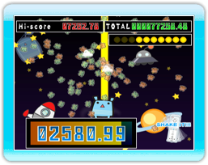
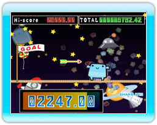

11 |
Mini-jeux (1) |
 |
Agite la télécommande Wii pour tirer un rayon laser du bas de l'écran.
Agite la télécommande Wii d'un côté à l'autre pour faire avancer sur la corde raide. Si tu fais un mouvement assez ample, va augmenter en taille et en vitesse. Mais fais très attention sur cette corde ! Si jamais tu te fais toucher par une flèche ou que tu tombes, c'est fini pour toi !
|


 |
 |
 |